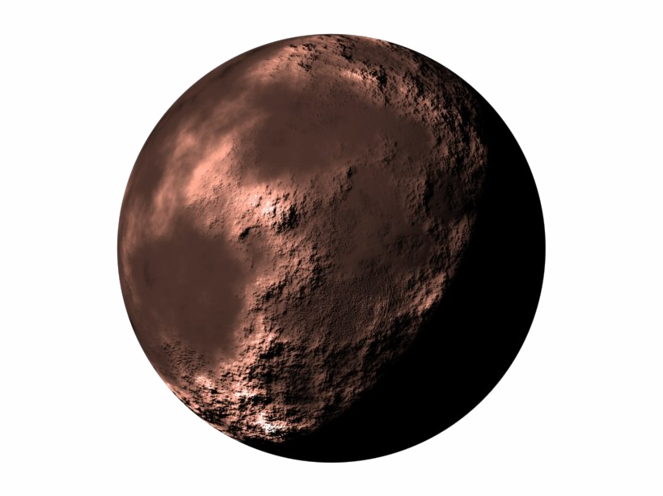

Mercury is the closest planet to the Sun and the smallest in our Solar System. It has almost no atmosphere, which means temperatures swing drastically between day and night. A year on Mercury takes just 88 Earth days!
⬅ Back to Planet Selector